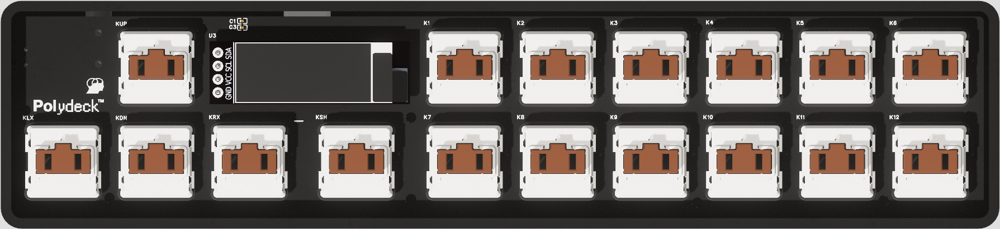
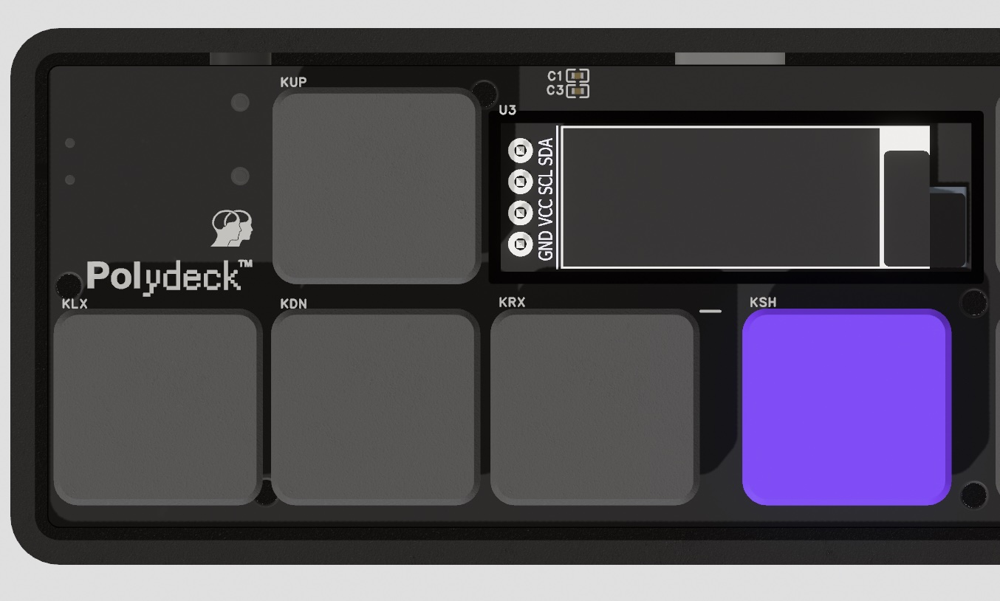

Workflow-first instruments for the connected mind.
We design devices for musicians who want a tighter loop between hardware, software, and performance. Every unit is made in small batches and built to order.
/ Open by design ■
Two ways to get an Intermynd instrument — buy it ready to play, or build it yourself from open schematics.
Order a pre-assembled unit, fully tested and ready to use. Every instrument ships with its enclosure, a power supply, and access to the browser-based control surface.
All schematics and PCB files are open source. Source your own components, mill or 3D-print a case, and assemble it yourself. Firmware is closed source.
/ Products ■
All schematics are fully open source. Make your own PCB and case at home, or order one pre-assembled from us. Firmware remains closed source.
A dedicated MIDI scene launcher for hardware. Switch between setups, recall scenes, and route control messages across your gear with zero menu diving.
Schematics free — build your own


A broader performance surface without giving up portability, clarity, or a modern control experience.
Schematics free — build your own
The same portable footprint and connected UI approach, built for rhythm-driven setups.
Schematics free — build your own
/ Approach ■
Every product starts from the musician’s actual loop: idea, edit, rehearse, perform, repeat. Less friction, more time making decisions that matter.
The musician’s loop drives every decision. We optimize for the moments between idea and execution, not spec sheets.
Physical devices paired with state-of-the-art browser UIs. Setup, configuration, and deeper control that feels current, not compromised.
Instruments shaped for real movement between studios, desks, rehearsal rooms, and live environments — without losing clarity or intent.
/ Mission ■
Intermynd exists to close the gap between physical instruments and modern software. The mission is simple: make hardware that feels immediate in the hands, powerful in the browser, and calm enough to disappear into the creative loop.
/ Production ■
Every product’s schematics are fully open source. Print your own PCB and case at home, or order one pre-assembled from us in a finished package. Firmware remains closed source.
Not chasing scale for its own sake. Each run stays focused, deliberate, and close to the product.
View the line